정부 상징을 구성하는 대표 색상인 정부 청색, 정부 회색, 정부 적색을 디지털 UI에 최적화한 색상으로 구성되었다.
웹 콘텐츠 접근성 지침(WCAG)의 AA 레벨을 충족하는 색상별 10단계(0,100 제외)를 지원하며, Grayscale을 제외한 색상별 주요 색상은 50이다.
Color Palette는 가장 밝은 색상을 0, 가장 어두운 색상을 100으로 한다.
Color는 명확한 커뮤니케이션을 위해 색상 명을 사용한다.
✅ 독자적인 Brand color를 Primary color로 사용하는 기관의 경우 Key color 규칙 적용을 권고
명암비가 웹 콘 텐츠 접근성 지침(WCAG 2.1)의 A A 레벨을 충족해야 하며, 색상별 10단계(0,
100 제외)를 지원해야 한다.
Primary color
Primary Color는 버튼, 활성 상태와 같은 UI 전체의 주요 구성 요소에 사용된다.
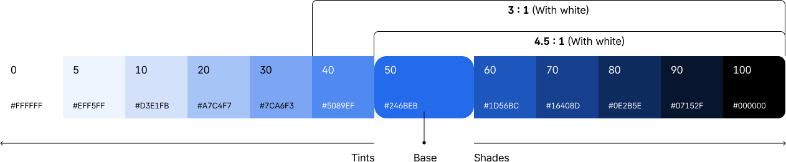
Secondary color
Secondary Color는 필터, 칩과 같이 UI에서 보조적인 역할을 하는 구성 요소 전반에 사용된다.
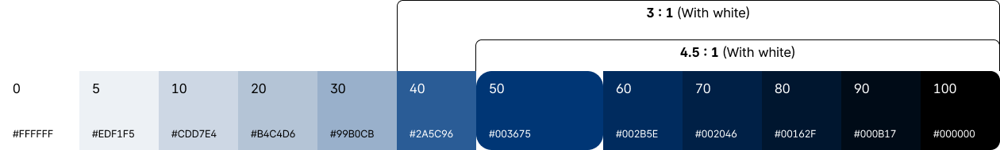
Grayscale
Grayscale은 정보전달과 위계를 나타내는 중요한 역할을 한다. 주로 BG, Text, line에 사용되며 특히 텍스트는 가독성을 고려해야 하기 때문에 배경과의 명암비를 고려해야 한다.
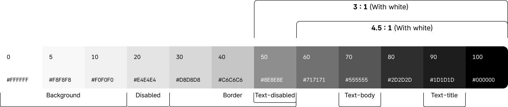
Alpha
다양한 배경 색상과 콘텐츠에 자연스럽게 융화되는 데 도움이 되는 Alpha 색상은 5단계 투명도를 사용한다.
BG, Text, line에 사용할 수 있으며 특히 텍스트는 가독성을 위해 배경과의 명암비를 고려해야 한다.
Key Colors Proportion
색의 비율을 균형감 있게 맞추기 위해 60%의 비율로 배경색, 30%는 보조색, 10%는 강조색으로 색 구성에 적용을 권장한다.
60%에 해당하는 색상은 주로 배경에 사용되며 흰색, 회색, 검은색처럼 무채색이나 Grayscale이 적용될 수 있다.
30%에 해당하는 색상은 보조색으로 BG color와 강조색을 연결하는 색상으로 BG color와 대비를 이루는 색을 조합하는 것이 좋다.
10%에 해당하는 색상은 강조색으로 강조색은 10% 이하로 적용하는 것이 색 구성에 효과적이며, 너무 많은 비율로 사용할 경우 강조성이 떨어지게 되므로 주의한다.
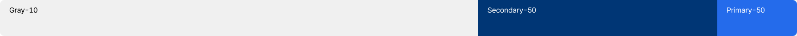
Usage
States
상태 표시 색상은 상황별 의미를 전달하는 색상으로 4가지 유형으로 사용하며, 기준 색상(Primary color)에서 점진적으로 증가하거나 감소하도록 정의한다.
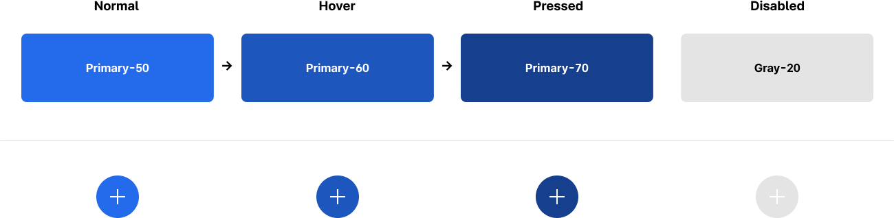
[색상 팔레트의 primary-50을 기준으로 상태 표시에 적용한 예시]
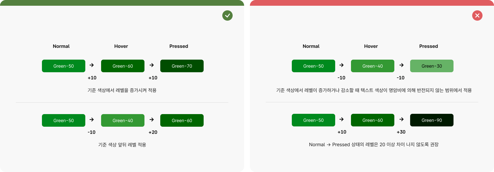
[색상 팔레트의 green-50을 primary color로 사용할 때 예시]
Background
배경색상으로 사용한다.
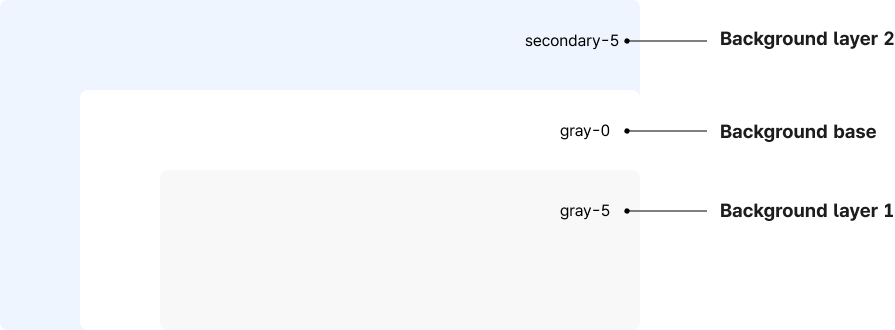
Border
테두리 색상으로 사용한다.
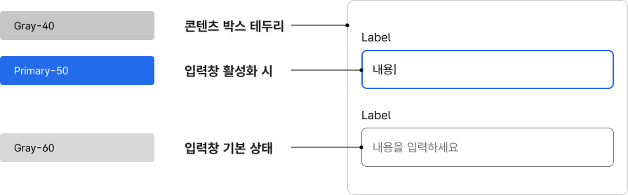
Text
텍스트 색상은 가독성을 고려하여 작은 텍스트(regular 18이하)는 배경 대비 4.5:1, 큰 텍스트(regular 18, bold 14이상)는 3:1의 비율을 권장한다.
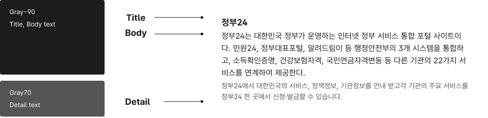
Point color
개요
Point color는 Primary와 Secondary의 균형을 맞추거나 요소에 대한 집중도 높이는 데 사용된다.
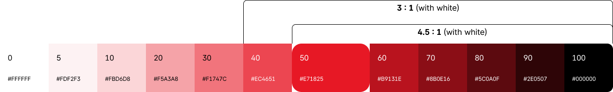
System colors
System color는 사용자에게 직관적으로 시스템 상태를 보여주는 색상으로, 텍스트와 모양(아이콘)을 함께 사용하는 것을 권장한다.
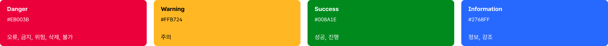
Danger
오류, 금지, 위험, 삭제, 불가 등을 표시할 때 사용한다.
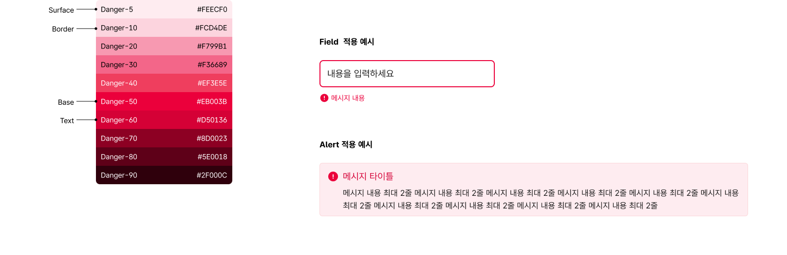
Warning
실수나 오류가 발생하지 않도록 주의 사항을 전달할 때 사용한다.
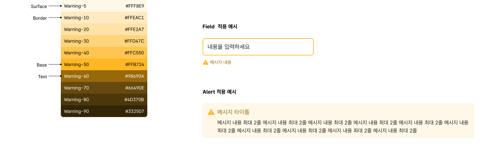
Success
성공, 완료, 진행 등의 결과를 전달할 때 사용한다.
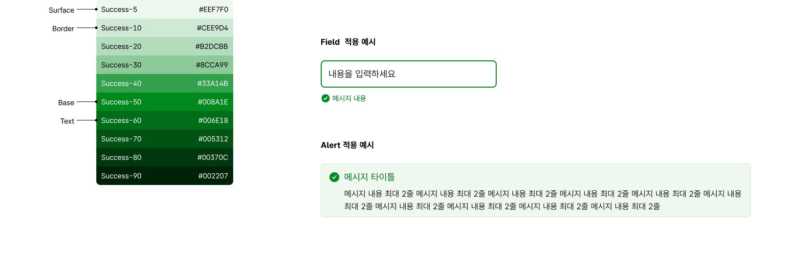
Information
정보를 제공하거나 특별히 강조가 필요할 때 사용한다.
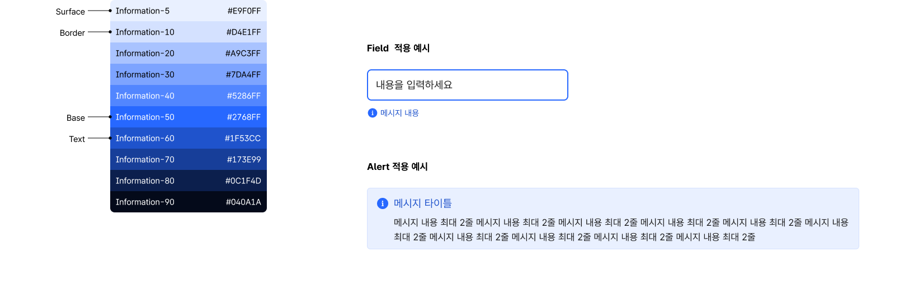
Palette
표준 색상 팔레트는 24가지 기본 색상을 포함하여 총 240가지 색상을 제공한다.
Key color 외에 색상이 필요할 경우 색상 팔레트에 있는 색상값을 우선으로 사용하는 것을 권장한다.
정의되지 않은 새로운 색상은 재사용성이 높을 경우에만 색상 팔레트에 추가하여 관리한다.
독자적인 BI를 보유하고 있는 공공기관 및 지자체의 경우 독자적인 고유의 컬러를 정의하고 있으므로 기본 팔레트에는 포함하지 않고 있다. 다만 표준 팔레트 색상단계 및 규칙을 필수로 참고하도록 한다.
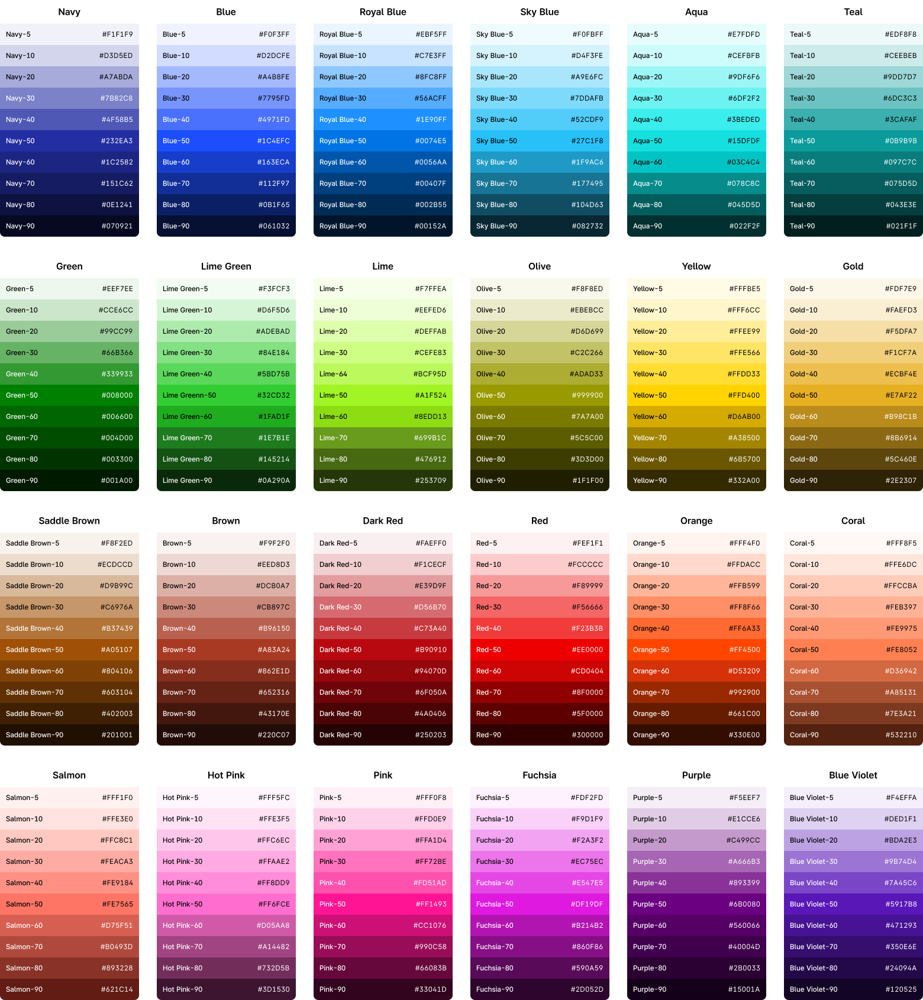
Accessibility
색상의 명암비는 웹 콘텐츠 접근성 지침(WCAG)의 AA 레벨을 충족하는지 확인해야 한다.
텍스트와 배경색의 명암비는 큰 텍스트의 경우 일반 글꼴 두께(Regular 400) 18px 이상, 굵은 두께(Medium 600, Bold 700) 14px 이상에서 AAA 4.5:1, AA 3:1의 레벨을 충족해야하며
작은 텍스트는 일반 글꼴 두께(Regular 400) 17px 미만, 굵은 두께(Medium 600, Bold 700) 13px 미만에서 AAA 7:1, AA 4.5:1의 레벨을 충족해야 한다.
Disabled 상태, 구성 요소의 모양과 같이 디자인이 사용자 에이전트에 의해 결정되고 작성자가 수정되지 않는 경우를 제외하고 사용자 인터페이스 구성 요소 및 상태를 식별하는 데 필요한 시각적 정보는 3:1의 대비를 충족해야 한다.